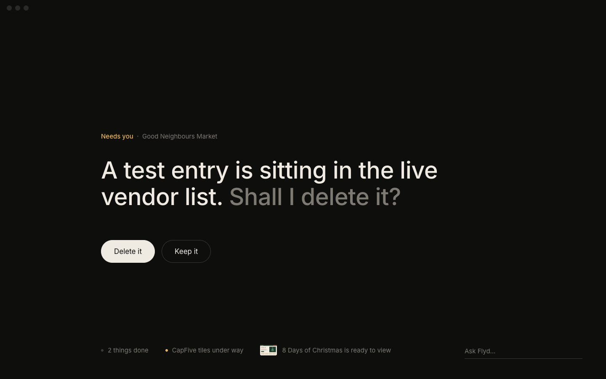
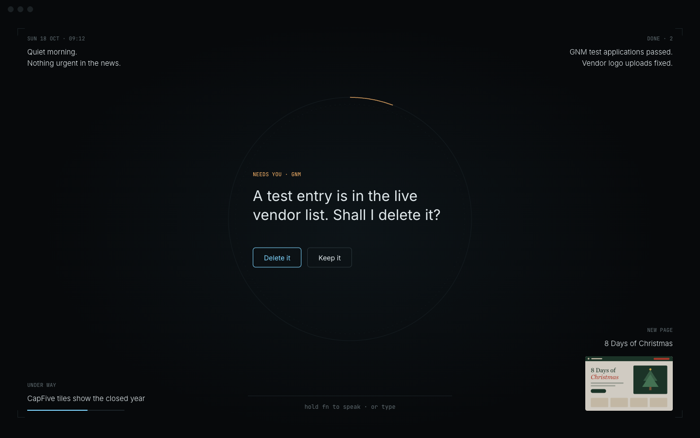
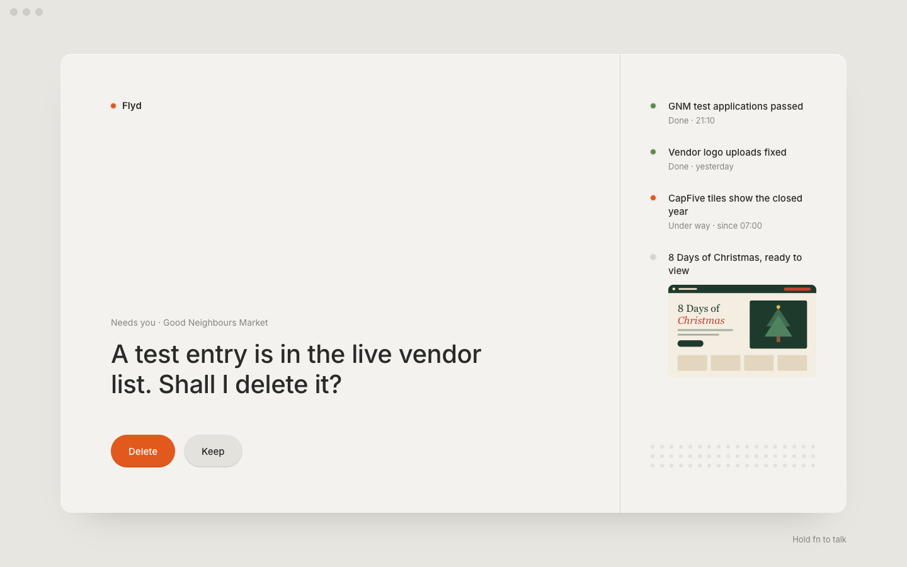
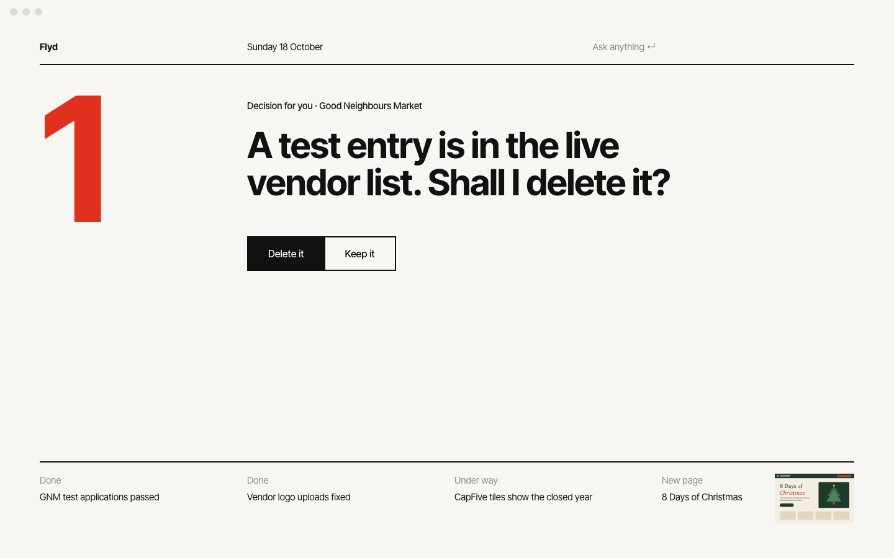
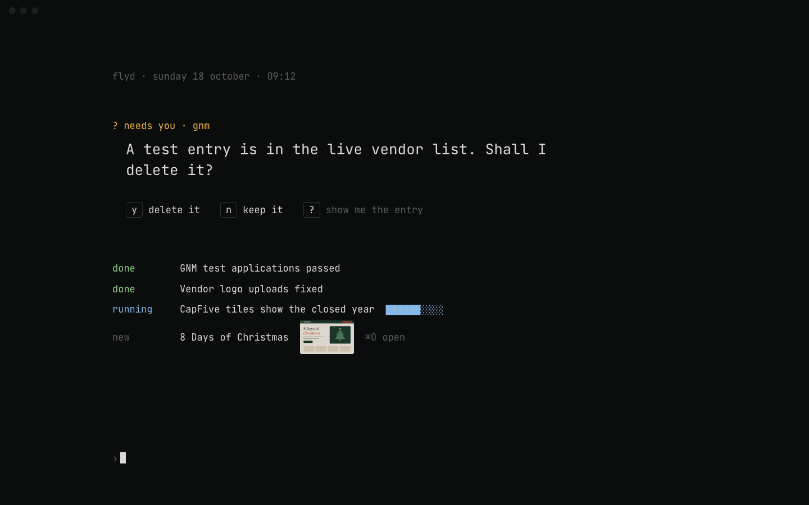
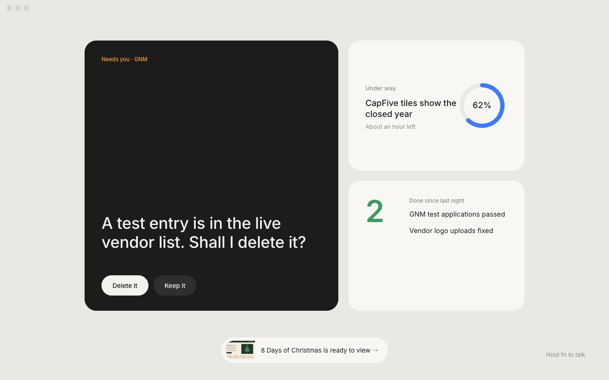
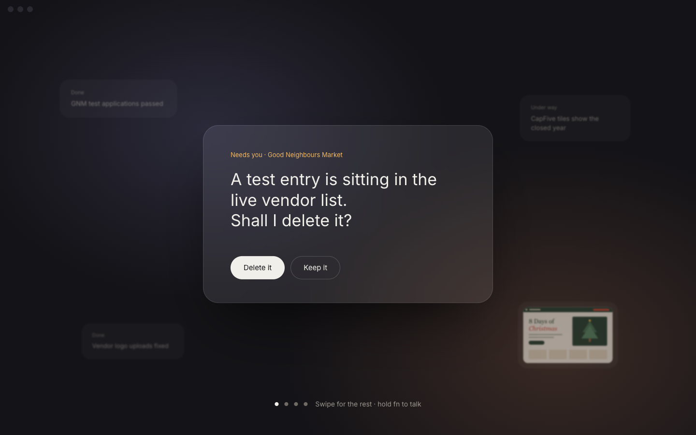
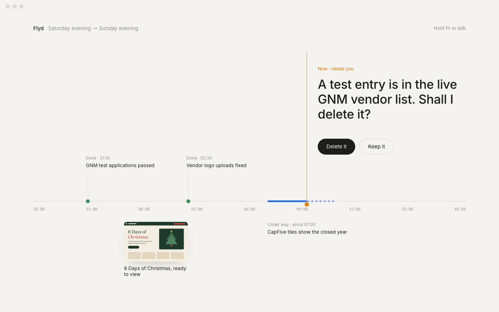
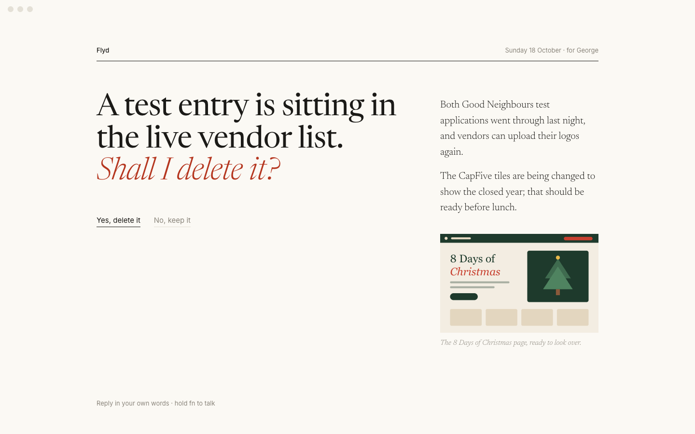
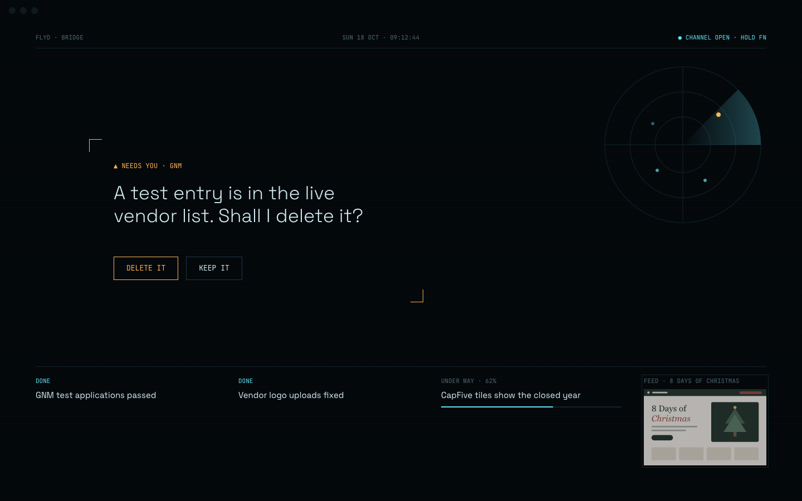

The window is today's single decision. Everything else is one quiet line at the foot.

Empty air with status in the four corners, like a heads-up display; only the centre asks.

Flyd as a Braun object: warm grey, one orange control, indicator lamps instead of badges.

A twelve-column poster: a count, the question, and a short index along the bottom rule.

One monospace column, keyboard first: y or n answers, every other line is a plain fact.

Three tiles you read in a second — what needs you, what's moving, what's done.

One frosted card floats forward; everything else blurs into the space behind it.

The day as one line: things sit where they happened, and "now" is the only point that asks.

A private morning paper for one reader: the question as the headline, the day in two sentences.

A bridge with the lights down: hairlines, one radar sweep, and one amber frame asking for a hand.